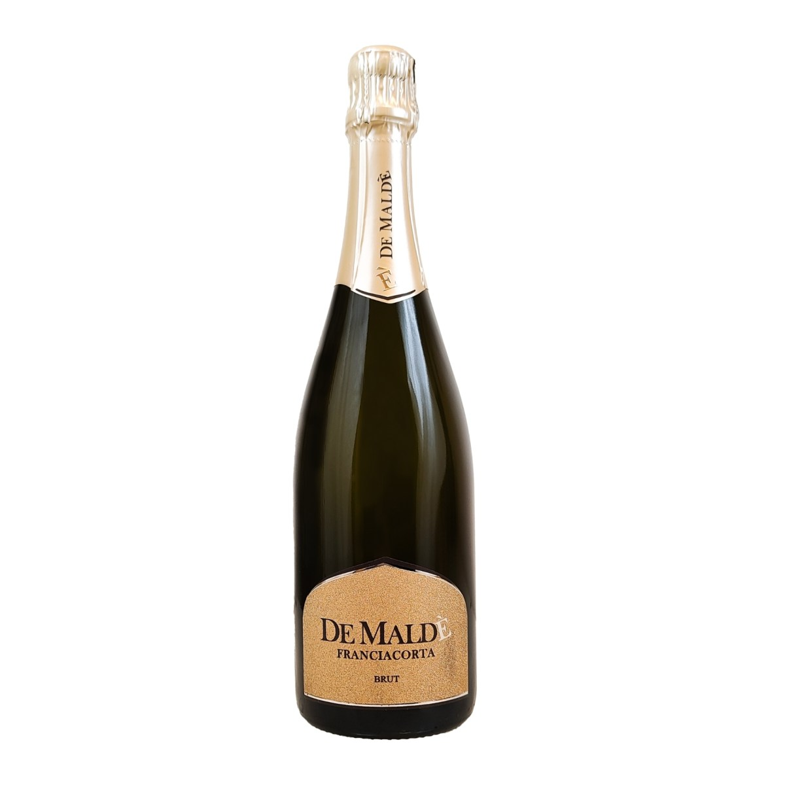
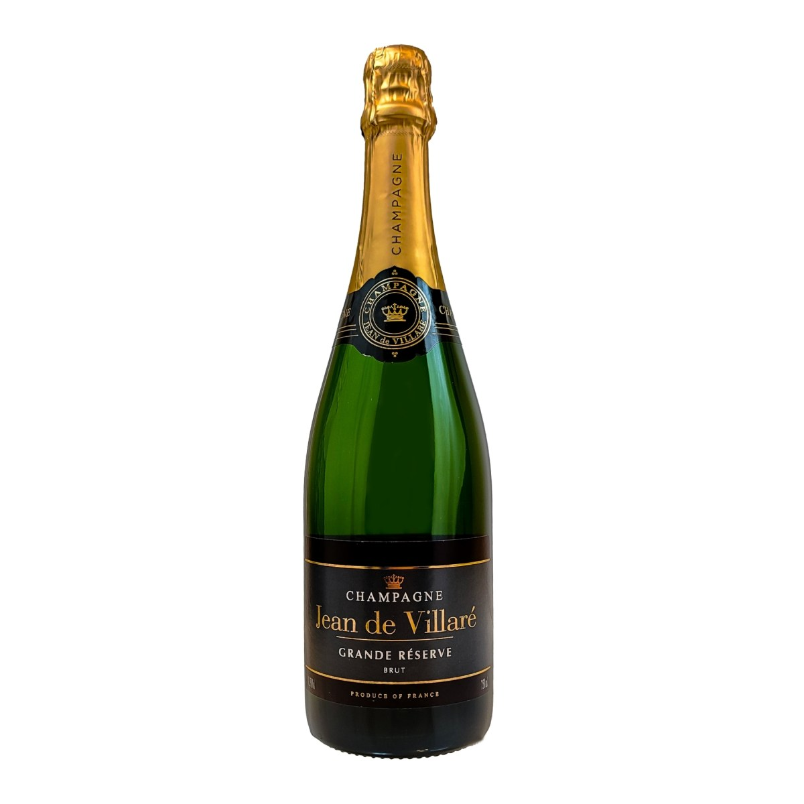
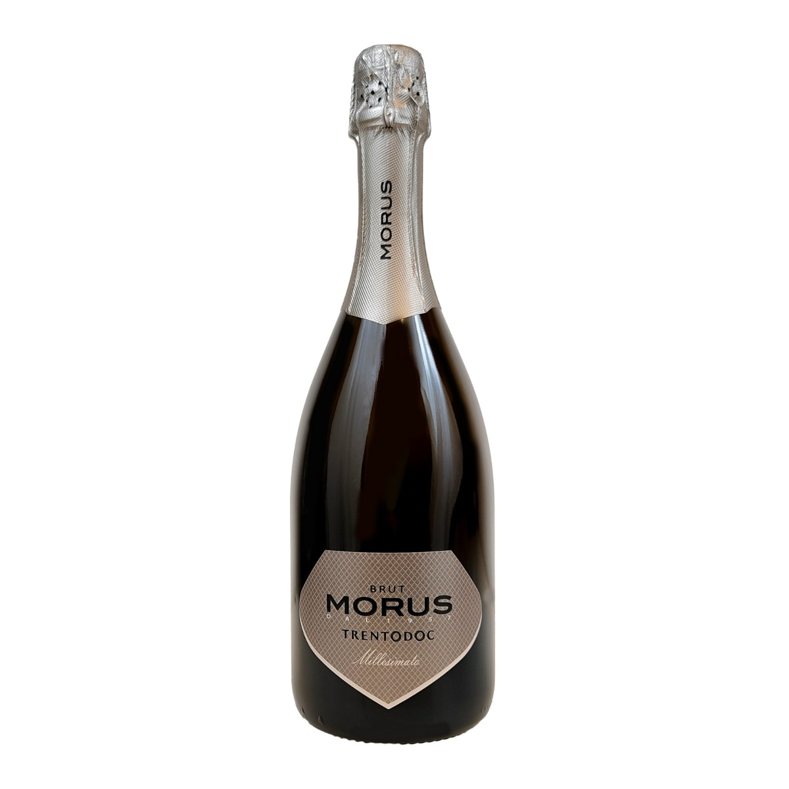
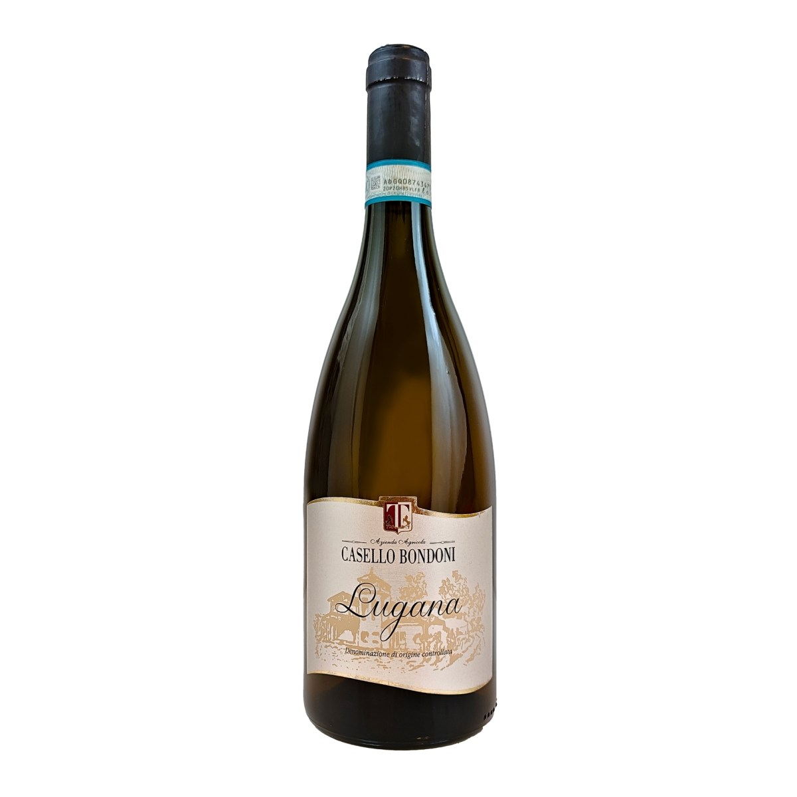
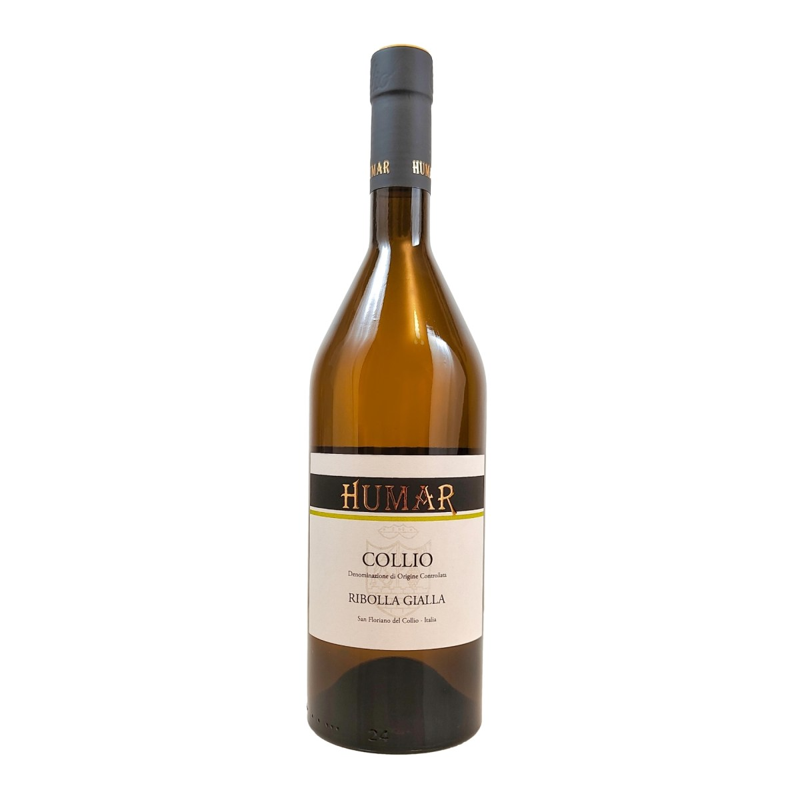
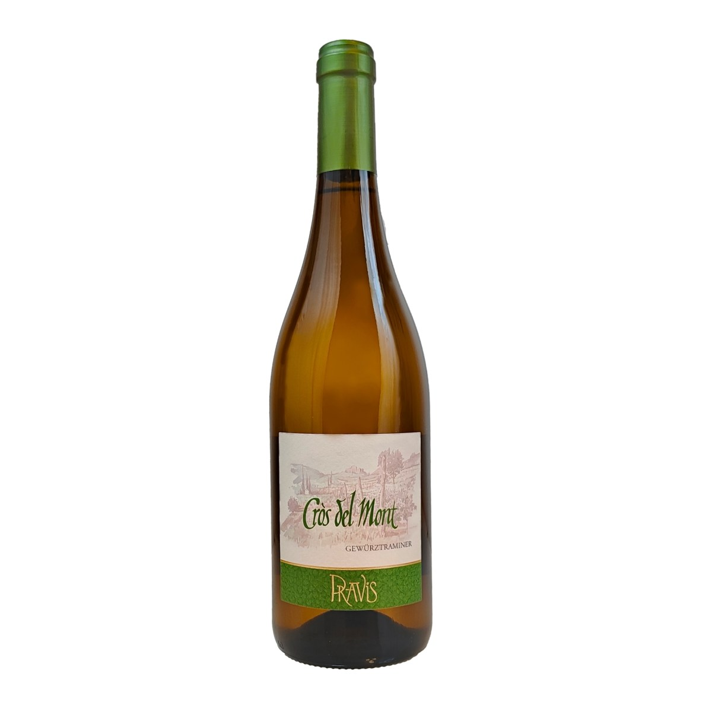
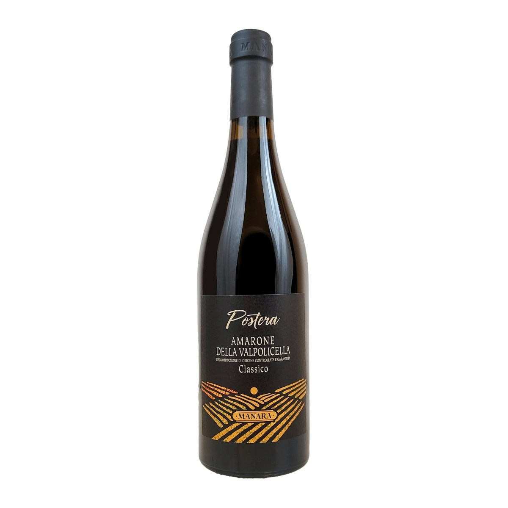
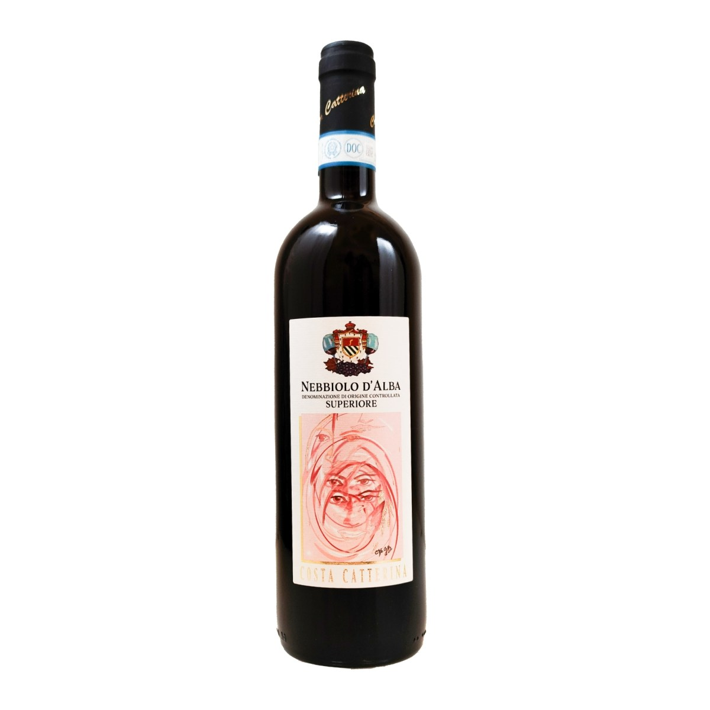
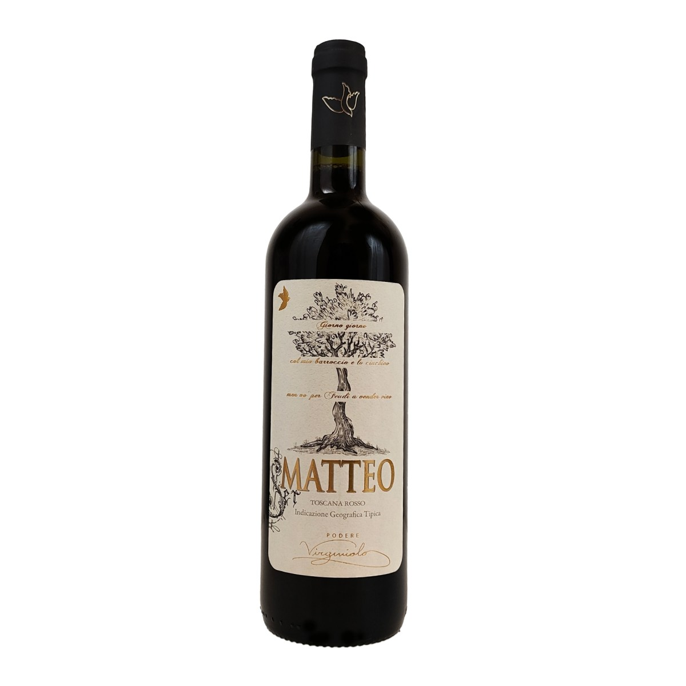

Claudio Cappelletti — Riva del Garda
Agente di commercio nel beverage per ristoranti, bar e birrerie. Sessanta etichette, quindici cantine: una verticale in quattro capitoli.
scorri la degustazione ↓Capitolo 01 · diciassette etichette
Dal Franciacorta di De Maldè allo Champagne di Bival, passando per il Trento DOC e i prosecchi di San Martino: la spalla giusta per aperitivi che non finiscono al primo giro.
Sfoglia le bollicine


Capitolo 02 · ventiquattro etichette
Il Lugana per il pesce di lago, la Ribolla del Collio, i profumi trentini di Pravis, giù fino a Greco di Tufo e Fiano d'Avellino: bianchi che reggono la carta tutto l'anno.
Sfoglia i bianchi


Capitolo 03 · diciannove etichette
Gli Amaroni di Manara, il Nebbiolo del Roero, il Super Tuscan di Podere Virginiolo e il Primitivo salentino di Vetrere: rossi che fanno alzare lo scontrino medio, non solo i calici.
Sfoglia i rossi


Capitolo 04 · su richiesta
Dal carattere unico, protagoniste di ogni occasione: spine, formati e marchi cambiano con le stagioni. La proposta giusta per la tua birreria la costruiamo insieme, a voce.
ParliamoneFine della degustazione
Degustazioni in sede, consigli sulla carta, riordini rapidi. Lavoro tra Riva del Garda e il Trentino.
Claudio Cappelletti · Beverage Sales Agent
Via San Tomaso 31/C — Riva del Garda (TN)